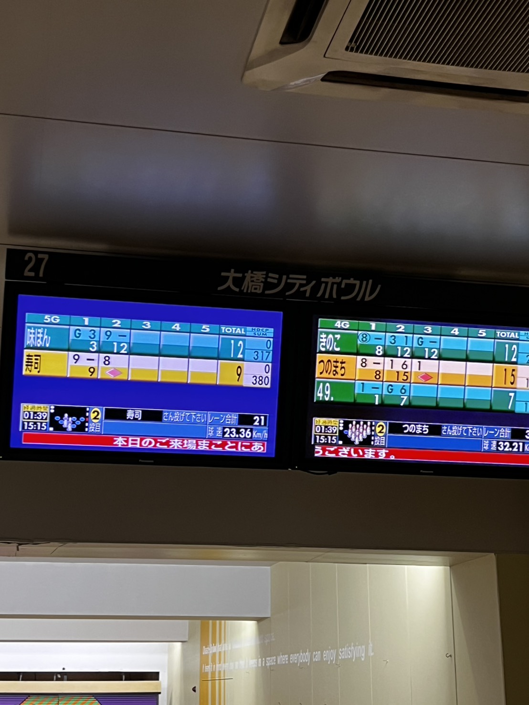

おつかれペッパー
31日 Part-1
今日は、塾お疲れ会。
みんな塾をやめるからせっかくならと、
開催した。しかし、来れない人が
2人発生。1人は拒否。もう1人は予定入り。
そして来たヤツらもヤバいやつらばっか。
集合時間遅れるやつ。昼ごはんみんなで食べる約束してたのに、勝手に家で食べてくるやつ。
ほんとにおもろい。
昼ごはんはやよい軒さんで。
唐揚げ7個の定食を頂きました。
ご飯は無理して3杯おかわり。無料だからな。
その後ボウリングへ
ほんとに久しぶりすぎて、クソ下手だった。
試しに変な転がし方をしてみると、
意外とストライクが入ったので、以降
その変な転がし方で。(その後成功なし)

これ見ると誰とやってんだろうかと思う。
ちなみに味ぽんが僕です。
次の番を待っていると、突然おばさんに
話しかけられた。びっくり。
｢スマホで飲み物を買いたいけど、わからない｣
とのことだった。
だから若い世代の人に聞いたそう。
すーぐ、OKし教えてあげた。
そのおばさんのいるシニアグループの人
みんなから見守られながら、
全く知らない自販機のアプリを動かす。
成功した。めっちゃ感謝された。
お礼として、微糖のカフェオレを貰った。
苦そうと思ったが、飲まないわけには
いかないので一気に飲むと、普通に美味しい。
新しい出会いがありました。
31日 Part-2に続く